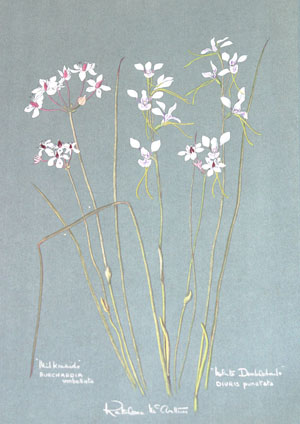
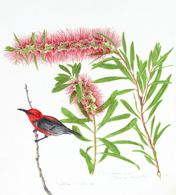
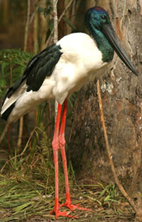

- Writing for the papers
- Progress!
- Scorched
- Flower time
- To the Editor
- Birds
- Jabiru
- Drongo
- Go or stay
Kathleen McArthur wrote extensively on wildlife, and her personal philosophy shines through in these newspaper articles. Wildlife and Landscape was a weekly feature in the Caloundra Weekly begun by Kathleen as a part of the activities of the WPSQ Caloundra Branch immediately after its formation in March 1963. For many years these articles were a ‘voice of conservation–education–research’ in Sunshine Coast newspapers, which Kathleen hoped would both ‘entertain and instruct’.
For Wildlife and Landscape from 1973 to 1975 Kathleen wrote Birds of the Sunshine Coast, a series of 122 articles published in the Sunshine Coast Weekly Advertiser. This set is currently held as cuttings in the Sunshine Coast Libraries Heritage Collection at Kawana Library.
Kathleen contributed to other series, including Bushland and Seashore in the Nambour Chronicle.
© WPSQ, Sunshine Coast & Hinterland Inc
Caloundra Weekly 7 February 1964
Wildlife and Landscape
PROGRESS!
Man inherits the earth. When a man inherits a fortu ne, if he squanders it in his lifetime, leaving nothing for his sons, he is condemned by his fellow men. Yet, when man squanders his inheritance of natural resources, those who condemn––the conservationists––are accused of trying to impede progress.
ne, if he squanders it in his lifetime, leaving nothing for his sons, he is condemned by his fellow men. Yet, when man squanders his inheritance of natural resources, those who condemn––the conservationists––are accused of trying to impede progress.
When a man inherits a fortune and uses it for the benefit not only of himself and his fellow men, but also for his sons and for their sons, he is a good man.
The country we inherit, the national heritage is not ours, but is the lifeblood of all men, alive and yet to be born. We have no right to take what we desire from it without provision for the future.
In Australia there are mainly moral issues, for with few exceptions the rape of the land is not legally a crime. Things are different in some countries where legislation can deprive a man of his land for bad practice.
It is not progress to destroy however great the immediate gain may be. Ancient history tells us of lands flowing with milk and honey, which today are barren wastes. Deserts have been created in the lifetime of living men. Between the extremes of well-managed, productive country and the desert wastes there are many stages of fertility destruction. Three generations of farming in this district have reduced some fertile forest land to a stage of uneconomical use. Much of this destruction was done in the name of progress.
There is talk nowadays of draining the tidal swamps of Moreton Bay to eliminate the breeding grounds of some species of mosquitoes. By doing this in the United States of America large shellfish industries were destroyed, for it is the tidal marshes that are the breeding grounds of shellfish. Shellfish, a most valuable food, is produced without cost and needs only to be harvested. Tidal wetlands are also the breeding grounds of game birds––another free food, as well as the basis of the industry involved in supplying the hunter with his expensive equipment. As well as game birds, the marshes are the breeding grounds of some of agriculture’s unpaid work force, the pest destroying birds such as the Ibis.
Before we insist that the reclamation of swamps is progress, all facts should be considered. There should be a central authority backed by scientific research to supply information on the values and dangers of using and abusing our natural resources. This would indeed be progress!
Kathleen McArthur
Wildlife Preservation Society of Queensland, Caloundra Branch
Reproduced with permission of Sunshine Coast Newspapers
© WPSQ, Sunshine Coast & Hinterland Inc
Caloundra Weekly 14 August 1964
Wildlife and Landscape
SCORCHED EARTH POLICY OF CALOUNDRA…Five years ago, before coming here, I asked a fr iend in Brisbane what Caloundra was like. He said, ‘It’s a beautiful place, spoilt by man’.
iend in Brisbane what Caloundra was like. He said, ‘It’s a beautiful place, spoilt by man’.
Nobody could deny Caloundra its claim to beauty, but it grows noticeably less so with each day, with the criminal destruction of its native trees, shrubs and wildflowers.
At present it appears to have reached an all time low with the bareness of King’s Beach, the burning of the Headland, the appalling desert-like entry along the road into Caloundra, and the unnecessary clearing of treed blocks of land throughout this once lovely area.
Many hundreds of visitors have commented to me on Caloundra’s lack of trees. What are we doing about it? Trees that have taken years to reach maturity and provided a natural and pleasing setting are cut down and later have to be replaced at considerable expense and trouble.
It’s hard work clearing these trees; it’s hard work planting more trees that may not thrive in sandy soil and salt-laden wind. The most sought after houses are those where the home-builder has used the natural setting and kept the trees.
The wildflowers of this district are becoming very scarce. When we are fortunate enough to have some on our property why not leave them undisturbed?
We could make Caloundra a place noted for its natural beauty. We have surf, sun and sand. Couldn’t we concentrate on restoring this lovely place to its right to be called––Caloundra, Beautiful Headland?
The above is a letter received this week. It is a cry of pain, which we can perfectly understand.
At last year’s Australasian Tourist Conference in Noosa, the New Zealand representative stressed the fact that we were, in trying to develop a tourist trade, in danger of destroying the very thing that would bring tourists––the naturally distinctive features of our landscape. He told me that huge bowls of Christmas flowers decorated his hotel, but he would have preferred to see them growing: where did they grow? Were there no facilities for taking tourists to see such a sight, and much more.
After all the delegates had left the conference the New Zealander took an extra day to see the trees and wildflowers of the Noosa area. A tour was arranged for him privately. It had to be arranged, for as we all know, we do not feature such programmes for tourists.
At a recent National Parks Seminar in Cunningham’s Gap National Park, to which came representatives from southern States, a speaker mentioned that there were wildflower reserves in Caloundra, but when he was seeking them and made enquiries at several places in the town no one could direct him to them. It appears to such people that we are very backward at promoting the very things that interest our visitors. And it is true!
Kathleen McArthur
Wildlife Preservation Society of Queensland, Caloundra Branch
Reproduced with permission of Sunshine Coast Newspapers
© WPSQ, Sunshine Coast & Hinterland Inc
Sunshine Coast Weekly, 18 August 1966
Wildlife and Landscape
WILDFLOWER TIME AGAIN!
It is a happy coincidence that the school holidays occur at a time when the Sunshine Coast wildflowers are blooming well. In addition to making a fine show, there is a wide variety of species to be found.
Well in bloom at the present time are a number of our most pleasing ground orchids. Both the Yellow and the White Doubletails may be seen from Dicky Beach to Currimundi as well as other similar areas all along the coastline. Each resort has still some wildflower plain left nearby. There are masses of Pinkies, Bluies and Whities as the children call the pink and the white Caladenias and the blue Waxlips. They are all five-fingered small orchids and can be seen to advantage where the Wallum has been mowed to the south of Currimundi Lake. For the keen eye there are the less pretty but fascinatingly shaped Beak Orchids and Leek Orchids. A lucky person may even find a rare Horned Orchid or the Burnt Orchid which is less rare but harder to find, although this last may have finished its flowering by the time this is printed. The beautiful blue Sun Orchids, one of the loveliest of all Australian wildflowers, will be in bloom; on the warm days opened out to reveal its full loveliness, but on cold days it will stay closed.
Vanilla Lilies or Chocolate Tops, the blooms of those mauve-green reed-like plants with clustered heads of mauve are coming out nicely. These are usually seen to advantage each Spring by the Beerwah Forest, but not this year as the patch was recently thoughtlessly (?) ploughed up.
On some days our Wild Irises will be seen in large numbers and on other days there will be only a few. Just why this is so still remains a mystery. When these three-petalled blooms are out they add a dominant purple tinge to the landscape.
It is early yet for a good showing of Wallum Boronia but some can be found. Possumflower, our other Boronia is flowering well. In some parts of the Sunshine Coast a third Boronia may be found––Boronia polygalifolia, a small pale, although delicately tinted flower it is. Just to the north of us, in the Cooloola area and on Fraser Island there is the rare and lovely Boronia rivularis.
Many are the wildflowers which can be discovered, with yellow peas predominant. Wedding Bush is past its best, but still worth admiring. Common Heath is good on the swampier places with only a small amount of Coral Heath. Some Banksias of all species will be blooming on and our common Lamb’s Tail Wattle is conveniently late this year.
It is hoped that many people of all ages will find enjoyment in wandering among our fine wildflowers––enjoying them, yet leaving them to be seen by those who will follow. Many tours are arranged for the months ahead, bringing bus loads of people from afar. These will include members of Garden Clubs, naturalists, Guide and Brownie packs and others. If everyone is prepared to enjoy the flowers of our wild public gardens without wanting to pluck large bunches or even small select posies, then on the whole the pleasure of it all will be shared by the greatest number of people to whom they belong. The picking of wildflowers in populated areas is no longer one of the human rights.
For those wishing to know more about our local wildflowers there will be lectures with slides on Tuesdays 16th and 23rd August in the Wildflower Room, Midyim, 16 Orvieto Terrace, King’s Beach, Caloundra, 3.30 pm to 5 pm. Lectures on our birds will be given by Robin Elks at the same time and address, on Mondays 15th and 22nd. These will be free and all are welcome to come!
Kathleen McArthur
Wildlife Preservation Society of Queensland, Caloundra Branch
Reproduced with permission of Sunshine Coast Newspapers and Hugh McArthur
© WPSQ, Sunshine Coast & Hinterland Inc
Sunshine Coast Weekly Advertiser 1 September 1966
PROTECTED FLORA
Sir––One of the reasons for the formation of the Wildlife Preservation Society of Queensland was public ignorance of our wildlife and the flora and fauna laws of this state.
Preservation Society of Queensland was public ignorance of our wildlife and the flora and fauna laws of this state.
The remark by Councillor Peirce at the Landsborough Shire Council meeting as quoted on the front page of your issue of August 25th, suggesting that the Sunshine Festival Committee ‘should go out in the bush and collect palms like old times,’ is an example of past mistakes not having been corrected. I would like to draw attention to the fact that palms in this State are protected flora.
Also on the protected list are all orchids, Boronias, Vanilla Lillies, Christmas Bells and many other wildflowers.
While publicity for wildflower conservation has been effective in influencing many people, with marked results, it is depressingly difficult to reach some people.
Yours truly,
Kathleen McArthur
Hon Secretary
Wildlife Preservation Society of Queensland
Reproduced with permission of Sunshine Coast Newspapers
© WPSQ, Sunshine Coast & Hinterland Inc
Lunch Hour Theatre Script A World of Birds, June 1995
A World of Birds, June 1995, pp 7, 8, 9
In 1962 the Wildlife Preservation Society of Queensland was established to publish a natural history magazine to encourage an interest in our indigenous wildlife. The idea was initiated by David Fleay, who was made well aware in the management of his wildlife sanctuary how little was known of our natural history.
My time had been devoted to the promotion of our wildflowers, both in black and white and in watercolours; it was now time to add the story of the area’s splendid fauna.
Sometimes in company but mostly alone I covered the area from the coast to the Blackall range, west to Kenilworth, north to Noosa and the wonderful Cooloola. It took three years of looking, listening, listing and learning before I felt entitled to go public.
Wednesday May 16, 1973 Birds of the Sunshine Coast was introduced in the Sunshine Coast Weekly with my thoughts at the time, and the Breedens’ photograph of the White-eyed Duck. At that time, mid-Seventies, it was a strange fact, yet a fact nevertheless, that comparatively few Queenslanders took a keen interest in their birds. This was most noticeable when reading the newsletters and magazines of the Queensland Ornithological Society, where the majority of the names of those who contributed and those who attended meetings and field outings were people from overseas or interstate. Englishmen, Canadians, New Zealanders, visiting American and Japanese with other-staters dominated the lists and did the work necessary to keep the Society alive.
I well recall how birds became a controversial item at the hearing of the Cooloola mining applications in the Gympie Mining Warden’s Court. The Mining Company’s Counsel, when cross examining me, tried to belittle my knowledge of the birds of the area, yet as I drove to Gympie each day I could see the flocks of migrating Honey-eaters moving on the coast towards Cooloola for the beginning of the wallum winter honey-flow. No one else in the court seemed to have any knowledge of birds so I was able to get some silent laughter when the QC for the miners questioned a fellow conservationist with the question: ‘Do you know what a dabchick is?’ The erroneous reply given was ‘Yes! a Swamphen’.
One company manager, giving his evidence, said there were no birds in the area under application for he had covered that country more than anyone else and the only bird he had seen was one lonely emu. There were, he said, more birds in the mined area at Inskip PoInt than in the whole of the Cooloola area. It could be seen what he meant, as people can recognise the birds of human habitation––the Peewees, Magpies, Kookaburras, Willie Wagtails, Butcherbirds and Crows, but they know no others and although approximately 200 plus species of birds have been recorded for the Cooloola area, few would recognise or know by call the majority of them.
The avifauna of Queensland is rich, but gets poorer every year––let’s say every month these last few years as habitat is being rapidly destroyed. There would be much more hue and cry from Queenslanders against habitat destruction if more of them took an interest in the local birds.
Back in the Seventies I was asked to contribute lists of birds and where to find them for Cooloola and Caloundra for a series of birdwatching guides being prepared for publication. With co-operation from various people I submitted a list for Cooloola, but refused to do the same for Caloundra with the comment that it was anyone’s guess what birds would be seen in Caloundra in the future. [The same could be said of the following areas:] The north bank of Bells Creek where 65 species could be recorded in an hour, after the tide-banks were disturbed and the bushland cleared; the mouth of the Mooloolah River where Northern Hemisphere waders rested, [that] became canal estates; more recently Lamerough mangroves––the last of their kind for special species––clear felled. We the people tried to save it all, even taking the Council to court. But it is no use weeping for the lost past.Reproduced with permission of Hugh McArthur; courtesy of Caloundra City Libraries
© WPSQ, Sunshine Coast & Hinterland Inc
Caloundra Weekly 24 April 1964
 Wildlife and Landscape
Wildlife and Landscape
THE JABIRU
It was on 11th April (dates are most important in bird studies) when we were watching waders at the mouth of Bell’s Creek that a Jabiru arrived on the flat and proceeded to walk right into the binoculars. It was a wonderful piece of luck, for this noble bird was showing off what must surely be his breeding plumage.
Cayley, in What bird is that, tells us the Jabiru’s breeding season is ‘May to October, but at any time after heavy rain’, which establishes a reasonable excuse for this bird to be wearing his best clothes.
The first change to be noticed was in the colour of his neck, which instead of being dull black was a bright luminous green. The top of his head was a rich red surrounded by an aura of blue. These two colours blending together gave to the head a purplish look. The legs were a vivid, deep pink. The illustration of this bird in Cayley’s book shows blue and green in the wings. Although we were able to see the bird very clearly there was no apparent colour at all in the black section of its wings.
Watching it feed, it appeared to poke its slightly open bill in to the mud or sand again and again, only sometimes bringing out small fish which needed juggling about to get into a position for swallowing. Now and then when stalking along in water it would flap its huge wings, which, I have been told, is to drive fish into a suitable position for catching. However, each time this was performed no fish were caught.
At last, after feeding with little result on this particular bank, it flew off northward up the Passage and was later seen on the flat at the mouth of Lamerough Creek.
After writing of the Jabiru in an earlier article I met Mr. J. Murphy of Bulcock Street, Caloundra, who has lived in Caloundra for twenty-six years and earlier still was well acquainted with the river flats of this district where Jabiru feed. He told me that he had heard the booming call of Jabiru––a very rare experience for they are seldom heard, so seldom in fact that some people think them mute. He imitated the call after saying how he first heard it as a young man when fishing at midnight in the lower reaches of the Caboolture River.
Mr. Murphy said he had never seen two Jabiru together. Although they are usually solitary, I recently saw a pair just south of Bell’s Creek and a friend reported seeing five together in the Upper Noosa River, where they are known to breed.
Occasionally, one may see this huge bird (one of Australia’s largest) sailing on the high winds overhead, catching the sunlight in the white of its wings, its head and long neck and bill stretched out before and its long legs trailing behind. It is an exciting sight.
Kathleen McArthur
Caloundra Branch, Wildlife Preservation Society of Queensland
Reproduced with permission of Sunshine Coast Newspapers
Photo by Paul Smith
© WPSQ, Sunshine Coast & Hinterland Inc
Caloundra Weekly 17 July 1964
Wildlife and Landscape
THE DRONGO IS A MOCKING BIRD
Last year I wrote about the Spangled Drongo, but at th at time I did not know that this bird can be quite a clever mimic.
at time I did not know that this bird can be quite a clever mimic.
Here I would like to quote the famous Australian ornithologist A.H. Chisholm, who says, ‘What has to be realised is that there are many species of Australian birds, widely varied in character, that practise vocal mimicry more or less freely, and at least ten of these are highly competent mockers. In addition, several species have been detected mimicking occasionally, in their reflective moments, as it were, and others again will probably be revealed as mimics when they are better known’.
Birds well known as mimics are the Olive-backed Oriole (which last year at Sandy Cape I heard imitating the calls of numerous birds, interspersed with its own call), the Satin Bowerbird and most famous of all, the two Lyrebirds. From my own observations I suspect the Whipbird is another mimic, but as yet have only circumstantial evidence.
Nowhere in Australian bird books have I read of the Drongo being a mimic, but in Birds of the World, the author, Oliver L. Austin, in speaking of Drongos says, ‘a few mimic other species of birds with considerable skill’.
So I was not surprised one morning recently when our Drongo, which spends the winter months here, sat calmly in a tree outside the house and imitated the calls of the birds in the garden at that time––the Brown Honeyeater; that simple, sweet, out-of-season note of the Rufous Whistler and the ‘practise’ notes of the Magpie; all the while pretending to be a honeyeater and pecking deep into the flower of a Paperbark.
When my sister, whose garden runs into mine, reported that this bird was playing the role of both cat and scolding bird, I treated her story with the usual bird observer’s scepticism. I would believe it when I heard it for myself! However, it was not many days later that the performance was repeated for me just outside my kitchen window. I was able to watch this bird as an actor taking two parts, both cat and bird.
From John Orrell in Cairns, who writes nature notes for Wildlife, the Cairns Post and North Australian Monthly, have come stories of Drongos taking the nestlings of smaller birds. It is pleasing to report that Drongos on the Sunshine Coast have sweeter tastes, sweeter songs and sweeter natures.
Kathleen McArthur
Caloundra Branch, Wildlife Preservation Society of Queensland
Reproduced with permission of Sunshine Coast Newspapers
© WPSQ, Sunshine Coast & Hinterland Inc
Sunshine Coast Daily 17 October 1981
Wildlife and Landscape
TO GO OR TO STAY…
Whether to go or to stay––that is the question people on this Coast are asking themselves now.
this Coast are asking themselves now.
The people who choose to live on the Sunshine Coast because of its natural beauty, its unpretentiousness, good fishing, clean beaches, its rural hinterland and last––but not least––good-neighbourly people are seeing it all disappear before an undesirable, artificial, materialistic replacement.
Instead of seascapes they look out at rows of brick blocks that might have been designed as housing commission units in Surry Hills or Footscray.
Quiet is gone. Semi-trailers laden with bricks roar through the streets and work is allowed on building sites from before 6 am to 10 pm, with no consideration for visitors on holiday. Residents have learnt not to expect much.
How much longer can we put up with it? Let’s go and look at Cooran, which doesn’t seem to have been ‘buggered up’ yet. And when you wake to the wonderful dawn chorus of Brown Honeyeaters and White-cheeks in harmony with the Mozartian call of Silvereyes only then do you realise that if you were to sell out and have the garden bulldozed away and the whole covered in bricks and concrete with, at the most, a few square metres of artificial landscaping, there would be no habitat for birds, no birdsong at all, no birds…
Then you start listing the wildlife that would be wiped out through our opting out. Apart from resident birds such as the above, there are all the visiting birds and the autumn and spring migrants, which take refuge on their way north and south. There are also the nomads that come from the west when drought denies them a living there.
Midyim and Sana gardens support a family of Ring-tailed Possums, which, unlike Brushtails, are herbivorous, living off the tips of trees mostly. The grey-headed Fruit Bats would be denied their midsummer feast of Bloodwood bloom, but they don’t mind the alternative of backyard pawpaw. Our Bearded Dragons and Pink-tongue Skinks would be the first to go under the bulldozer, which would be just as well, as what creature would want a diet of pinebark?
The guilt of responsibility for the demise of so much life would be intolerable.
Kathleen McArthur
Wildlife Preservation Society of Queensland, Caloundra Branch
Reproduced with permission of Sunshine Coast Newspapers
© WPSQ, Sunshine Coast & Hinterland Inc